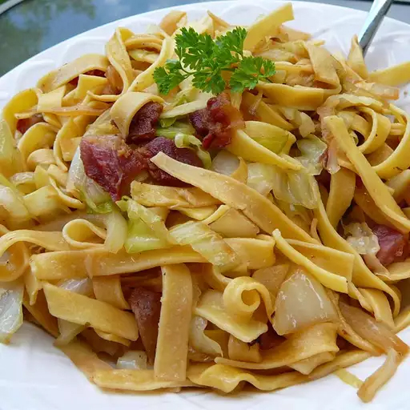

Halushki

Easy and Quick Halushki
Polish dish combining bacon, fried cabbage and egg noodles.
Ingredients
- 1 pound bacon
- 1 onion, diced
- 1 (16 ounce) package egg noodles
- 1 head cabbage, sliced
- salt and ground black pepper
Steps
- Snip bacon into small pieces and cook in a large skillet
over medium heat until crisp, stirring often, about 10 minutes.
Cook and stir onion with bacon until translucent, about 5 more minutes;
set bacon and onion aside, leaving drippings in the skillet.
- Bring a large pot of lightly salted water to a boil.
Cook egg noodles in the boiling water,
stirring occasionally until cooked through but firm to the bite,
about 5 minutes. Drain.
- Transfer bacon and onion mixture with drippings into the pot
used to cook the noodles and cook and stir cabbage until coated with drippings.
Cover pot and cook until cabbage is tender, 10 to 12 minutes, stirring occasionally.
Gently stir in noodles and season to taste with salt and black pepper.
- Finished! Enjoy this delicious meal!